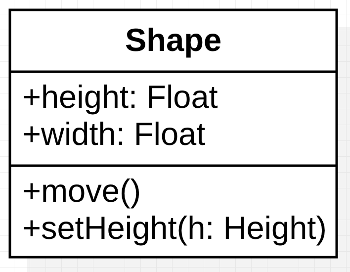
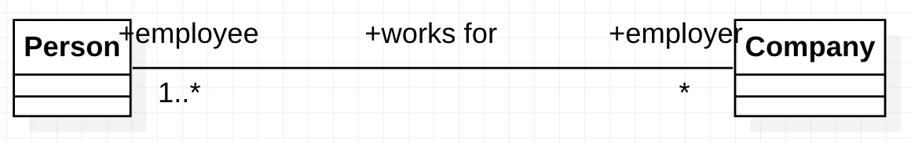

UML绘图学习
UML绘图学习
1. 什么是UML
UML（统一建模语言，Unified Modeling Language），是一种用于对软件密集型系统的制品进行可视化、详述、构造和文档化的图形语言。UML是在多种面向对象分析与设计方法相互融合的基础上形成的，最初于1997年被对象管理组织正式采纳作为建模语言规范。在大学课程里的软件需求分析这门课上，作为重点学习。
主要学习运用UML如何对基本结构、高级结构、基本行为、高级行为以及体系结构进行建模。
2. 对基本结构建模
2.1 类
类（class）是对一组具有相同属性、操作、关系和语义的对象的描述。
对于名称来说，包括简单名以及将包作为前缀类名的限定名。而且类名中的每个词的第一个字母通常要大写。
属性（attribute）是已命名的类的特性。描述了数据类型以及可以取值的范围。类可以有任意数目的属性，也可以没有属性。可以通过声明属性的类以及属性可能的默认初始值来进一步地详述属性。
操作（operation）是一个服务的实现，该服务可以由任何类的对象来请求以影响其行为。
职责（responsibility）是类的合约或责任。当创建一个类时，就声明了这个类的所有对象具有相同种类的状态和相同种类的行为。在操作下一栏进行描述，是自由形式的文本
2.2 关系
当建造抽象时，会发现类很少单独存在，大多数类会以几种方式相互协作。在面向对象的建模中，有3种特别重要的关系：依赖（dependency）、泛化（generalization）和关联（association）。
2.2.1 依赖
依赖（dependency）是一种使用关系，说明一个事物使用另一个事物的信息和服务，但反之未必。在图形上，把依赖画成一条有向的虚线。当要指明一个事物在使用另一个事物时，就选用依赖。
2.2.2 泛化
泛化（generalization）是一般事物（称为父类）和该事物的较为特殊的种类（称为子类）之间的关系。在图形上，把泛化画成一条带有空心三角形大尖头的有向实线，指向父类。一个类可以有0个、1个或者多个父类。
2.2.3 关联
关联（association）是一种结构关系，它指明一个事物的对象与另一个事物的对象间的联系。
*1. 名称 *关联可以有一个名称，用以描述该关系的性质。
2. 角色 关联两端描述角色名。
3. 多重性 关联的角色具有多重性，它表示一个整数的范围，指明一组相关对象的可能个数。将多重性写成一个表示取值范围的表达式，其最大值和最小值可以想通，用两个圆点把它们分开。表示：一个（1）、零个或一个（0..1）、多个（0..*）、一个或多个（1..*）。
4. 聚合 两个类之间的简单关联表示了两个同等地位的类之间的结构关系，这意味着这两个类在概念上是同级别的。其中一个类描述了一个较大的事物，它有较小的事物组成。它表示为在整体的一端用一个空心菱形修饰的简单关联。
2.3 公共机制
UML由于存在着4种运用于整个语言的公共机制而得以简化，它们是：规约、修饰、公共划分和扩展机制。
2.3.1 修饰
- 注解是一种最重要的能单独存在的修饰。注解是附加在元素或元素集上，用来表示约束或注释的图形符号。在图形上，把注解画成带有一个折叠角的矩形，在矩形中填写文字的或者图形的注释。
2.3.2 扩展
- 衍型是对UML的词汇的扩展，用于创建与已有的构造块相似但针对特定问题的新种类的构造块。在图形上，把衍型表示成用双尖括号（即<<和>>）括起来的名字，放在其他的元素名之上。简单来说，即类型化。
- 标记值是衍型的一种特性，允许在带有衍型的元素中创建新的信息。在图形上，把标记值表示成形如name = value的串，放在一个附加到对象上的注解中。作为说明的数值。
- 约束是对UML元素语义的文件说明，用来增加新的规则或修改已有的规则。在图形上，把约束表示成用花括号括起来的串。即修饰说明具体规则。
2.4 图
2.4.1 结构图
现有的UML结构图可用于对系统的静态方面进行可视化、详述、构造和文档化。
- 类图：类、接口和协作
- 构件图：构件
- 组合结构图：内部结构
- 对象图：对象
- 制品图：制品
- 部署图：结点
2.4.2 行为图
- 用况图：组织系统的行为
- 顺序图：注重于消息的时间次序
- 通信图：注重于收发消息的对象的结构组织
- 状态图：注重于由事件驱动的系统状态变化
- 活动图：注重于从活动到活动的控制流
2.5 类图
类图是面向对象系统建模中最常见的图。类图显示了一组类、接口、协作以及它们之间的关系。用于对系统静态设计视图建模。
2.5.1 类图内容
通常包括：
- 类
- 接口
- 依赖、泛化和关联关系
2.5.2 正向工程和逆向工程
- 正向工程指的是根据UML模型创建Java类
- 逆向工程指的是根据Java类转换到UML模型
3. 对高级结构建模
3.1 高级类
3.1.1 类目
类目包括类，然而类不是唯一的一种类目。其他的类目还包括接口（interface）、数据类型（datatype）、关联（association）、信号（signal）、构件（component）、结点（node）、用况（use case）、子系统（subsystem）。主要学习抽象类、接口、关联类。
抽象类是一种不能够被直接实例化的类，也就是说不能够创建一个属于抽象类的对象。就像是构造一个Shape类为其他形状的父类。
接口是一个没有具体实现的类。
关联类既是关联也是类。不仅像关联那样连接两个类，而且还可以定义一组属于关系本身的特性。如果在具有关联关系的类中，存在着一个属性放哪个类都不合适的情况，就要考虑使用关联类。
3.2 高级关系
3.2.1 依赖
依赖是一种使用关系，它描述了一个事物的规约的变化可能会影响到使用它的另一个事物，但反之不然。在图形上，把依赖画成一条指向被依赖的事物的许仙。
3.2.2 泛化
在高级关系中的泛化指多继承的泛化
3.2.3 关联
- 导航。带箭头的关联
- 可见性。给定两个类之间的关联，除非另有显式的导航声明所规定的限制，否则一个类的对象能够看见并导航到另一个类的对象。
- 限定。对关联角色的规定。
- 组合。
- 关联类
- 约束
3.3 实例
实例名称，如t : Transaction，其中t表示实例名，Transaction表示对象的类型。
3.4 对象图
对象图对包含在类图中的事物的实例建模。对象图显示了在某一时间点上一组对象以及它们之间的关系。在图形上，对象图是顶点和弧的集合。
一般包括：
对象
链
对象图即表示实例之间的关系。
4. 对基本行为建模
4.1 交互及交互图
4.1.1 交互
交互（interaction）是一种行为，这种行为由语境中的一组对象为达到某一目的而交换的一组消息构成。即指实例之间进行操作或者传递信息。
在传送一个消息时，对消息的接收通常会产生一个动作。这个动作可能引发目标对象以及该对象可以访问的其他对象的状态改变。在UML中，有一下几种动作：调用（call）、返回（return）、发送（send）、创建（create）、撤销（destroy）。
4.1.2 交互图
交互图包括顺序图和通信图。
- 顺序图强调消息的时间顺序。顺序图具有对象生命线，一条垂直的虚线，表示一个对象在一段时间内存在。然后，顺序图还有控制焦点，一个瘦高的矩形，表示对象执行一个动作所经历的时间段，既可以是直接执行，也可以是通过下级过程执行。矩形的顶部表示动作的开始，底部表示动作的结束。

- 通信图强调参加交互的对象的组织。首先，通信图有路径。可以根据关联画一个路径，也可以根据本地变量、参数、全局变量和自访问呈现路径。路径表示一个对象的知识源。其次，通信图中有序号。

4.2 用例及用例图
4.2.1 用例
用例（use case）是对一组动作序列的描述，系统执行这些动作序列来为参与者产生一个可观察的结果值。
4.2.2 用例图
用例图包括：
- 主题
- 用例
- 参与者
- 依赖、泛化以及关联关系
4.3 活动图
活动图（activity diagram）显示从活动到活动的流。一个活动是一个状态机中进行的非原子的执行单元。在图形上，活动图是顶点和弧的集合。
一般包括：
- 动作
- 活动结点
- 流
- 对象值

5. 对高级行为建模
5.1 状态机与状态图
5.1.1 状态机
状态机（state machine）是一种行为，它说明对象在它的生命期中相应事件所经历的状态序列以及它们对那些时间的响应。最基本的是，从初始状态开始，从一个状态，通过某种操作，转换到另一种状态，最终进入结束状态。初始状态和最终状态实际上都是伪状态。
5.1.2 状态图
在UML中，用状态图对一个对象按事件排序的行为建模。
状态图通常包括：
- 简单状态和组合状态。
- 转移、事件和动作。

总结
至此为止，软件需求分析课程中所涉及到的UML建模知识已经列出。其他比如关于进程线程以及对体系结构建模的知识在软件开发中并不十分常用。